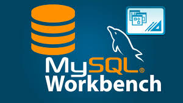

Knowledge
Relational Databases
I have extensive experience with relational databases, particularly MySQL Workbench, where I specialize in database design, complex querying, and performance optimization. I'm passionate about creating efficient and scalable applications.
Web Development Frameworks
In addition to my database skills, I have a strong proficiency in frameworks like Django for building robust web applications. I enjoy leveraging Django’s features to create clean, maintainable code and streamline development processes.
Server-Side Solutions
On the server side, I use Node.js to develop scalable solutions, taking advantage of its non-blocking architecture to handle multiple requests efficiently. I also work with React for building dynamic user interfaces, focusing on creating responsive and user-friendly experiences.

Personal Projects
In my personal projects, I often integrate these technologies to develop full-stack applications, allowing me to explore the entire development lifecycle—from database design to front-end implementation. I'm always eager to learn new technologies and improve my skills, whether through online courses, community events, or contributing to open-source projects.
Community Engagement
Outside of coding, I enjoy collaborating with other developers and sharing knowledge through meetups and workshops. This helps me stay connected with the tech community and continuously expand my expertise. Back to Top
 Project 1: I worked on the Inventory Management System, a web-based application designed to improve inventory tracking for a small retail business. My primary responsibility was to establish a MySQL Workbench connection to manage the relational database effectively.
Project 1: I worked on the Inventory Management System, a web-based application designed to improve inventory tracking for a small retail business. My primary responsibility was to establish a MySQL Workbench connection to manage the relational database effectively.